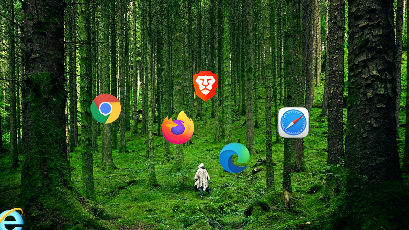

Frontend Basics
2020-12-01

This post is to help you understanding the difference between Frontend Development and Backend Programming.
I'm guessing if you're on a desktop or laptop you open your web browser to do some of the following things daily:
- Check email
- Pay Bills
- Spend time on Social Media
- Watch YouTube
- Shop Online
Like most non-technical people I bet you never stop to ask how your browser works.
What is a Browser?
Browsers are applications that allow you to surf the web.
They do this by downloading the files that make up web pages and render them on your computer.
There are many different browsers available. Here's a short list of the most popular.
- Google Chrome
- Brave
- Firefox
- Safari
- Microsoft Edge
- Internet Explorer (outdated but still in use)
When you start your browser it immediately connects to the internet, downloads your home page and renders it for you. Depending on the speed of your internet and computer this process usually takes seconds.
This is because the files that make up web pages are small. Your browser does all the work figuring out how to translate the code into an interactive visual display.
What do Browsers speak?
All browsers understand the following three coding languages.
- HTML = Hypertext Markup Language
- CSS = Cascading Style Sheets
- JS = JavaScript, which is a programming language different from Java.
These are known as scripting languages because they are run directly by the browser without needing to be compiled like a backend programming language. (More on this later)
Different browsers will render the same code slightly differently due to how different companies implement different rendering engines inside their browsers.
This means that no matter how amazing a frontend developer is at coding web pages they can never make them look perfect across different browsers. "Pixel Perfect" is an unrealistic myth.
People who create web pages that users interact with are called Frontend Developers. Their whole job is to write the code that browsers understand and can display.
Backend Programmers
But browsers cannot do everything. Some of the data processing takes place on the server.
A server is a powerful computer located in a server farm or at a company's office. It runs software that allows many people to connect to it and request copies of the website.
It also provides the processing power to run backend programming languages. These languages are more complex and require compiling before they can run.
Compiling means the source code that the backend developers write has to go through an extra step where it is converted to a program that can run on the server.
Examples include:
- C# (pronounced as See Sharp)
- Java
- Python
- PHP
These languages are used to verify logins, retrieve data from or write to a database, process payments, and send data back to users when requested.
The key thing to remember about backend languages is they cannot run in a browser.
Frontend Education
The process of learning three separate languages that have to work together to build web applications takes a lot of time. There are many articles, books, and video courses that teach HTML, CSS, and JavaScript.
These skills take longer than a weekend to learn. Becoming proficient enough to work in a professional environment requires study, practice, and building projects to learn how to overcome unforeseen challenges.
Dealing with cross-browser differences so the pages look similar is one of many struggles Frontend Developers deal with.
Here's a small list of videos that will teach you the basic skills. How long would it take you to master these lessons?
- HTML
- CSS
- JavaScript